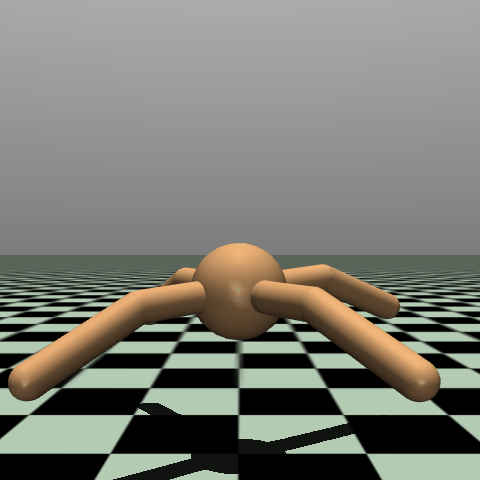

I’ve had a lot of fun (most of the time) training reinforcement learning algorithms to play various gym environments. There is a somewhat sad satisfaction in getting an agent to push a cart to the top of a hill, land a lunar lander, or balance a pole on a cart - cartpole was the first RL task I tackled, and I am not ashamed to say I was very excited to see a pixelated cart successfully balance a pole.
For others (the thousands clearly reading this…) looking to learn, heres a list of resources for RL I’ve found useful:
- Sutton and Barto’s intro RL book http://incompleteideas.net/book/the-book.html
- OpenAI’s ‘spinning up’ website https://spinningup.openai.com/en/latest/index.html
- Georgia Tech’s RL course https://www.udacity.com/course/reinforcement-learning–ud600
I took a break from self-learning RL, since I felt I’d gotten most of the low-hanging fruit, but decided to give something a try recently. Last time I looked around the state of libraries for RL was pretty bad, but now the suite of environments in gym is being maintained again, and there are a few good libraries that package up standard algorithms.
In this post I’ll look at DDPG, or Deep Deterministic Policy Gradient. It’s goal is to learn a policy for environments with continuous actions. The authors of the paper Lillicrap et al. (2019) note several issues arising from working in discrete action spaces, the main one being that the dimensionality of your action grows exponentially with the number of degrees of freedom — e.g. if your action is the movement of 10 joints, and each joint has 8 possible movements, then your action has dimensionality \(8^{10}\). Working with continuous action spaces overcomes this limitation, and they borrow heavily from previous work to train successful agents that output continuous actions on several tasks.
I’ll use this algorithm to train the Ant-v4 environment from gymnasium[mujoco]. This task asks us to train a quadruped —which I will call a spider in defiance of the name of the environment and the number legs on a spider— to walk to the right by applying torques to 8 joints (the action is a continuous, 8 dimensional vector).
Alright, so how do we do this? Well, I’m gonna level with you, you should just go read the paper, BUT - the short version is that we train a network \(Q_\theta\) with parameters \(\theta\) to estimate the Q-value at each state-action pair, as well as train a network \(\mu_\phi\) parametrized by \(\phi\) to learn the policy.
The Q-value is updated in the usual manner - by minimizing it’s squared deviation from the boostrapped future rewards, i.e. minimizing \(\frac{1}{N}\sum_{i=1}^{N}(r_i + \gamma Q_\theta(s_{i+1}, \mu_\phi(s_{i+1})) - Q_\theta(s_i, a_i))^2\). We then update the policy network \(\mu_\phi\) by applying the policy gradient, which was proven by Silver et al. (2014) to be approximated by:
\[ \frac{1}{N}\sum_i \nabla_a Q_\theta(s = s_i, a = \mu(s_i)) \nabla_\phi \mu_\phi(s_i, a_i) \]
Where the term inside the sum is an expansion of \(\nabla_\phi Q_\theta(s, \mu_\phi(s))\) via the chain rule.
This reminds me a lot of value iteration, where we first try to update our estimate of the value function, and then ‘chase’ our updated estimates of the value function by updating the policy with respect to those value functions. Usually, that means just updating our policy to take the new max, but here we have an actual policy gradient that flows through the value function.
They also augment their training with ideas from Mnih et al. (2015), specifically the replay buffer and target networks. The replay buffer is used to break the correlation between samples which is inherent in the sequential nature of the environment. Basically, we store a queue of <state, action, reward, next state> training tuples, and then randomly sample minibatches from this queue at train time. The target networks are used to stabilize training. If not used, then the network you are updating is also the network you are using to compute the target value, which….just seems wrong? Anyway, training without target networks tends to cause divergence in the updates.
Okay, so how to we do this? First, go read the paper! Their pseudo-algorithm is actually pretty good and this article is just some guy doing the whole learning by explaining thing while trying to maintain some level of online presence. You’re still here? Fine….we’ll do what I just described. I have the full training script in this notebook. There’s also a bonus mini-example of how to use wandb with ray-tune in there.
Actor (policy) and Critic (Q-network)
Okay, first thing, make two architectures to be the Q network and policy network. These are commonly referred to as the critic (Q network criticizes how ‘good’ a state action pair is) and the actor (the policy network chooses actions to be criticized).
import torch
import torch.nn as nn
import torch.nn.functional as F
class Actor(nn.Module):
def __init__(self, state_dim, action_dim, max_action):
super(Actor, self).__init__()
self.l1 = nn.Linear(state_dim, 512)
self.l2 = nn.Linear(512, 256)
self.l3 = nn.Linear(256, action_dim)
self.max_action = max_action
def forward(self, state):
a = F.relu(self.l1(state))
a = F.relu(self.l2(a))
return self.max_action * torch.tanh(self.l3(a))
class Critic(nn.Module):
def __init__(self, state_dim, action_dim):
super().__init__()
self.l1 = nn.Linear(state_dim, 400)
self.l2 = nn.Linear(400 + action_dim, 300)
self.l3 = nn.Linear(300, 1)
def forward(self, state, action):
q = F.relu(self.l1(state))
q = F.relu(self.l2(torch.cat([q, action], 1)))
return self.l3(q)Yup, those are two MLPs … I guess one thing to note is that the critic takes both state and action as input, but the action comes in at the second layer. Another is that the actor outputs a tanh activation times the max of the action space. Now, we make FOUR NETWORKS! Two extra for the ‘target networks’ that will be used to form…the targets. It sounds ridiculous, but like everything else in machine learning, they tried it and it worked, so were trying it.
critic = Critic(env.observation_space.shape[0], env.action_space.shape[0])
actor = Actor(env.observation_space.shape[0], env.action_space.shape[0], env.action_space.high[0])
critic_tgt = Critic(env.observation_space.shape[0], env.action_space.shape[0])
actor_tgt = Actor(env.observation_space.shape[0], env.action_space.shape[0], env.action_space.high[0])
opt_critic = AdamW(critic.parameters(), lr=cfg['critic_lr'])
opt_actor = AdamW(actor.parameters(), lr=cfg['actor_lr'])Notice how I’m not making optimizers for the target networks. They are updated by slowly copying the weights from the main networks, like so:
for param, param_tgt in zip(critic.parameters(), critic_tgt.parameters()):
param_tgt.data.copy_(cfg['tau']*param.data + (1-cfg['tau'])*param_tgt.data)
for param, param_tgt in zip(actor.parameters(), actor_tgt.parameters()):
param_tgt.data.copy_(cfg['tau']*param.data + (1-cfg['tau'])*param_tgt.data)That is, the weights get updated by \(\theta_{tgt} = \tau * \theta + (1-\tau) * \theta_{tgt}\), where \(\theta\) is the weights of the main network and \(\theta_{tgt}\) is the weights of the target network.
Replay Buffer
This is simple enough, we make a queue, and while traversing the environment we store state, action, reward, next state tuples in it, and then sample from it to update our actor and critic. I also fill it with a few thousand random samples before starting training, just to get some initial data in there to sample from. The queue is implemented using collections.deque:
import collections
replay_buffer = collections.deque(maxlen=cfg['buffer_size'])
#...then during training ...
replay_buffer.append((obs, act, rew, obs_next, done))I didn’t mention that we also store whether or not we have completed an episode (done) in the replay buffer. This is needed when forming a target for an action where we only want to consider the reward. Storing done allows us to multiply the bootstrapped part of the value function by 1 - done to zero out the value function if we have completed an episode:
y = np.array(rew_b) + cfg['gamma']*(1-np.array(done_b))*Q_tgt.numpy()Training
Okay, so store some interaction with the environment, and on each step sample from the replay buffer and update things. One thing that may not be obvious is how to update the actor network. Yea I wrote some weird chain rule formula up there but whats the code? It is a little weird, but if you stare at it it makes sense:
acts_actor = actor(torch.from_numpy(np.array(obs_b)).float())
Q = critic(torch.from_numpy(np.array(obs_b)).float(), acts_actor)
opt_actor.zero_grad()
loss = -Q.mean()
loss.backward()
opt_actor.step()Whats happening here is we send a sample through the actor, pass that action to the critic, and then… call backward() on the loss of -Q? Remember the standard backward() + step() pattern updates the weights to minimize whatever you called backward() on. Here we are calling it on the negative of the Q value, that is we are minimizing the negative value, which is maximizing the positive value — we are applying a gradient to our policy network that results in greater value. When we call step() we only call it on the actor network (at this point in the training loop we’ve already updated the critic). The whole chain rule stuff is taken care of by the fact that the gradients flowed backward through the critic.
Hyperparameters
I do some hyperparameter tuning on things like batch size, replay buffer size, and learning rates. Here’s a link to a group of runs produced by ray-tune and wandb where you can see the variability in training outcomes due to hyperparameters:
Weird walking spiders…
Here is a funny walking spider trained via this procedure, the goal is to move to the right:

It funnily pulls itself along with one leg, which I will call a success, though I’ve seen other solutions where it majestically launches itself to the right like a gazelle.